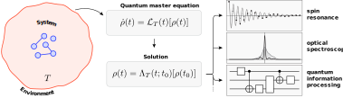

First fruit: apple3 About the course
3.1 Why simulate open quantum systems?
The experimental frontier of quantum optics increasingly targets systems that cannot be described by perfectly isolated, unitary dynamics. Photons leak from cavities, solid‑state qubits couple to phonons, and measurement back‑action reshapes quantum states in real time. In these scenarios the open character of the system—the interplay between coherent evolution and irreversible processes—becomes the defining feature, not a perturbation. Analytical solutions exist only for a handful of toy models; to design devices, interpret data, and test conceptual ideas we therefore rely on numerical simulation of open quantum dynamics.
Numerical methods allow us to:
- Predict observables such as spectra, correlation functions, or entanglement measures before running an experiment.
- Prototype control protocols (e.g., pulse shaping or feedback) that can stabilize fragile quantum states.
- Explore parameter regimes that are inaccessible analytically, revealing new phenomena like dissipative phase transitions or non‑Markovian memory effects.

3.2 Why Python?
Python is not the fastest language for floating‑point arithmetic—compiled languages like C or Fortran still win raw speed benchmarks—but it has become the lingua franca of modern scientific computing. Three qualities make it particularly compelling for our purposes:
- Expressiveness – A succinct, readable syntax lowers cognitive overhead and lets us translate mathematical ideas into code quickly.
- Rich ecosystem – Numpy, SciPy, Jupyter, Matplotlib, and data‑analysis libraries coexist seamlessly, providing everything from linear algebra kernels to publication‑quality plots.
- Community & portability – Tutorials, StackOverflow answers, CI pipelines, and cloud platforms such as Google Colab enable beginners to run the same notebooks locally or on GPUs in the cloud with negligible setup.
Most importantly, Python hosts QuTiP (Quantum Toolbox in Python)(Johansson, Nation, and Nori 2012; Lambert et al. 2024) the de‑facto standard library for simulating open quantum systems. QuTiP wraps efficient C and Fortran back‑ends behind a high‑level interface: you manipulate Qobj instances instead of raw matrices, and you call solvers such as mesolve or mcsolve for Lindblad‑master equations and quantum trajectory simulations, respectively. The package is actively maintained, well documented, and battle‑tested across thousands of research papers.
3.3 How does Python differ from other mainstream languages?
| Language | Paradigm | Typical strength | Typical weakness |
|---|---|---|---|
| C / C++ | Compiled, low‑level | Maximal performance, fine‑grained memory control | Verbose, higher barrier to entry, manual parallelization |
| Fortran | Compiled, array‑oriented | Legacy HPC codes, excellent BLAS/LAPACK bindings | Limited modern features, smaller community |
| MATLAB | Proprietary, array‑oriented | Integrated IDE, built‑in plotting, domain‑specific toolboxes | License cost, closed ecosystem |
| Python | Interpreted, multi‑paradigm | Readability, vast open‑source libraries, rapid prototyping | Overhead of interpreter, GIL limits naive multithreading |
Python balances high‑level productivity with the option to call compiled extensions (via Cython, Numba, or Rust bindings) whenever performance matters.
3.4 A glance at Julia and QuantumToolbox.jl
While Python dominates current scientific computing, it is not the only contender. In recent years, researchers and engineers have been exploring the need for a new programming language—one that combines the performance of compiled languages like C or Fortran with the ease of use and readability of scripting languages like Python or MATLAB. This is the motivation behind Julia.
Julia promises “C‑like speed with Python‑like syntax” by using just‑in‑time (JIT) compilation and a multiple‑dispatch programming model. Within this language, the package QuantumToolbox.jl(Mercurio et al. 2025) has emerged as a high‑performance analog to QuTiP. It mirrors QuTiP’s API but benefits from Julia’s performance model and native automatic differentiation. Benchmarks already demonstrate significant speed‑ups, especially for large Hilbert spaces and GPU‑accelerated workloads.
Nevertheless, Julia’s ecosystem is still maturing. Its tooling, package stability, and IDE support are evolving rapidly but are not yet as robust as Python’s. Similarly, QuantumToolbox.jl, while powerful, has a smaller user base and fewer educational resources compared to QuTiP. For a course focused on accessibility and broad applicability, we therefore choose to prioritize Python and QuTiP as the more mature and stable learning platform.
3.5 Course scope
In this course we therefore focus on Python + QuTiP. You will learn to:
- Build Hamiltonians and collapse operators in a composable way.
- Integrate master equations and unravel them into quantum trajectories.
- Compute expectation values, spectra, and correlation functions.
- Couple simulations to optimisation or machine‑learning workflows within the wider Python ecosystem.
Where Julia can offer useful perspective we will point out parallels, but all hands‑on examples will run in Python notebooks that you can execute locally or on Colab.
Take‑away: Numerical simulation is the microscope of modern quantum optics. Python and QuTiP give us a practical, accessible, and well‑supported platform for that microscope—letting us peer into the dynamics of open quantum systems without getting lost in low‑level details.
3.6 First steps in Python: lists, loops, and functions
3.6.1 Creating and using lists
Before diving into numerical simulations, it’s useful to get acquainted with the basic syntax and features of Python. One of the simplest and most commonly used data structures is the list, which stores a sequence of elements. Lists are flexible—they can contain numbers, strings, or even other lists.
Here’s how to create and access elements in a list:
3.6.2 For loops
A for loop allows us to iterate through each item in a collection and execute the same block of code for every element. You will use loops constantly—whether you are sweeping parameter values, accumulating results, or analysing datasets—so it is worth seeing the syntax early.
3.6.3 Defining functions
Functions bundle reusable logic behind a descriptive name. In quantum‑optics simulations, well‑structured functions help keep notebooks tidy—for instance, collecting the code that builds a Hamiltonian or evaluates an observable in one place. Below is a minimal example that squares a number.
3.6.4 Lambda (anonymous) functions
Occasionally we only need a small, throw‑away function—say, as a callback or key in a sort operation. Python’s lambda syntax lets us declare such anonymous functions in a single line, without the ceremony of def.
3.6.5 Complex numbers
Python has built‑in support for complex numbers, which are represented as a + bj, where a is the real part and b is the imaginary part. This is particularly useful in quantum mechanics, where complex numbers are ubiquitous.
3.6.6 Why plain Python lists can be slow
Python lists store references to arbitrary Python objects. Each element carries its own type information and reference count. When you perform arithmetic on list elements, the interpreter must
- Look up the byte‑code for each operation.
- Resolve types at runtime.
- Dispatch to the correct C implementation.
This per‑element overhead dominates runtime in numerical workloads.
3.6.7 Enter numpy
To overcome the performance limits of pure‑Python lists, we turn to NumPy, which stores data in contiguous, fixed‑type arrays and dispatches mathematical operations to highly‑optimised C (and often SIMD/GPU) kernels. The example below shows how you can express a million‑element computation in just two vectorised lines.
numpy provides fixed‑type, contiguous arrays backed by efficient C (or SIMD/GPU) loops. Operations are dispatched once for the whole array, eliminating Python‑level overhead and unlocking BLAS/LAPACK acceleration.
As an example, we can compute the sum of all the elements of a python list, comparing the performance with a numpy array.
NumPy is also able to perform vectorized operations, which let us express complex computations in a few lines of code. For example, we can compute a function of all elements in an array without writing explicit loops. This is not only more readable but also significantly faster, as the underlying C code can be optimised for performance.
One line performs a million floating‑point operations in compiled code—often orders of magnitude faster than an explicit Python loop.